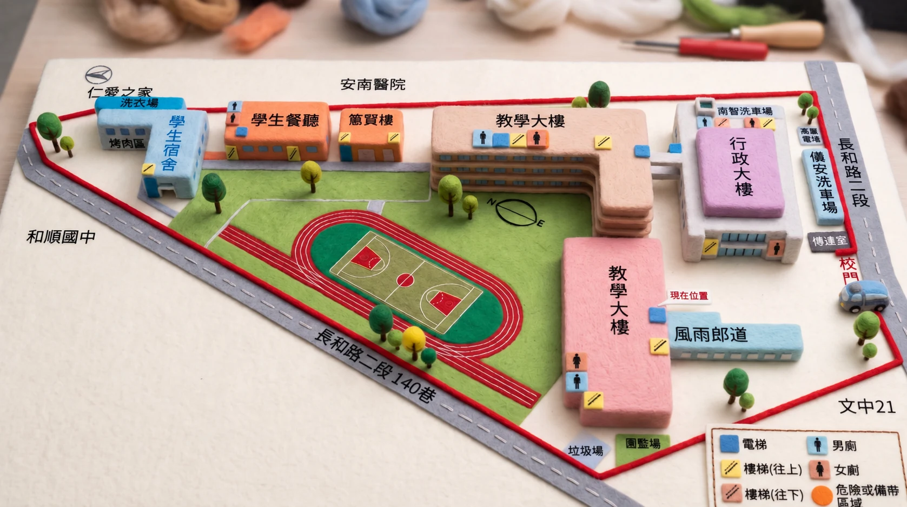

先認識危險的地方
危險分兩類：一是校園裡的危險角落，二是報告列為性平事件風險的空間。
危險角落（15 處）
報告列為校園危險角落，需要特別留意與巡視。
性平事件風險空間（8 類）
報告列為性平事件風險空間。
資料基準：113 年 4 月 8 日。巡檢與改善的實際執行情形，請以校內最新紀錄為準。
校園地圖
紅色編號為危險角落的大致位置。點選編號可查看該地點的報告照片。

地點清單
可用關鍵字搜尋地點，或依類別篩選。
沒有符合條件的地點，換個關鍵字試試。
安全巡檢點
依報告記載，兩組巡檢人員每日各巡檢 2 次。
校園偏僻區域｜保全巡邏 10 點
校園及建築物內的巡邏位置
- ①總務處前樓梯口
- ②職評室前消防栓
- ③蕙質樓電梯
- ④餐廳南側機車棚
- ⑤餐廳電梯
- ⑥洗衣場外樓梯
- ⑦宿舍電梯外
- ⑧垃圾場內側
- ⑨攀岩場外樓梯
- ⑩性別友善廁所外牆
主要建物內偏僻區域｜技工友巡邏 14 點
依建物分組列出，便於快速核對
- 行政大樓①模擬工廠 1F 東南側
- 行政大樓②實輔處 2F 東南側
- 行政大樓③禮堂 3F 東南側
- 行政大樓④禮堂 3F 東北側
- 行政大樓⑤禮堂 4F 西南側
- 行政大樓⑥禮堂 4F 西北側
- 教學大樓⑦門市教室 2F 外露台
- 教學大樓⑧丁梯 3F 頂樓梯
- 教學大樓⑨乙梯 4F 頂樓梯間
- 教學大樓⑩丙梯 4F 頂樓梯間
- 餐廳⑪1F 南側
- 餐廳⑫1F 北側
- 餐廳⑬2F 南側
- 餐廳⑭2F 北側
安全檢查週期
照報告所列的執行頻率整理。
建物安全檢查全校每 2 年 1 次
消防安全檢查每半年 1 次
電梯保養每月 1 次
電氣設備（配線）每月巡檢 1 次
緊急求助鈴每月巡檢 1 次
監視器每月巡檢 1 次
資料來源：112 學年校園危險空間改善報告（113.4.8）
地點名稱、巡檢位置與檢查週期依報告整理；報告第 11～27 頁影像已複製至本站，訪客不需登入即可瀏覽。